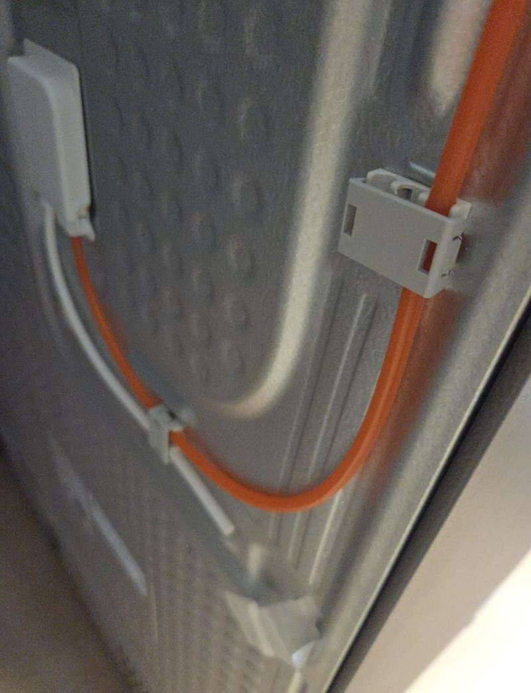
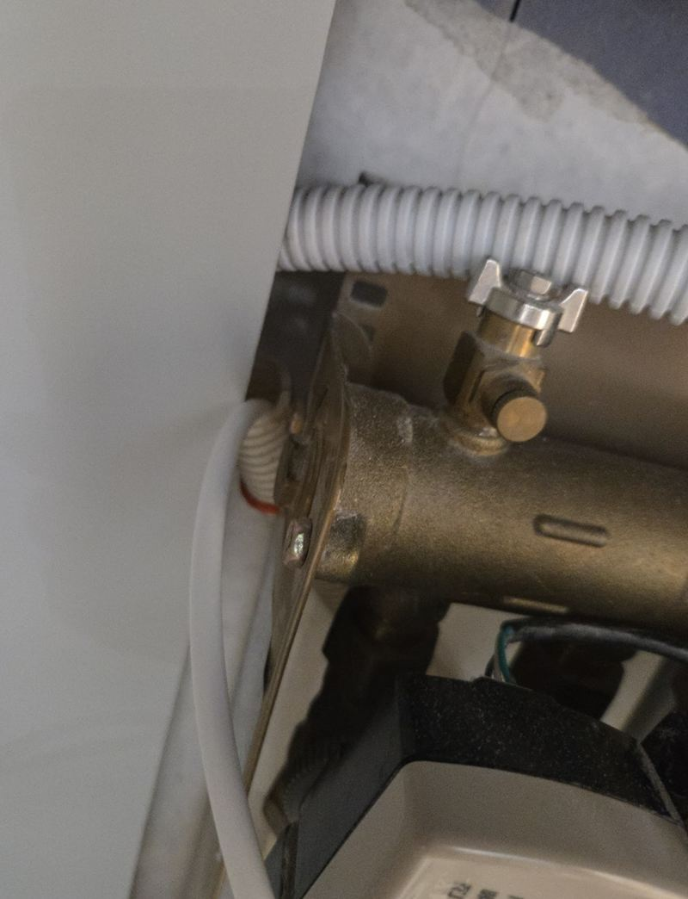
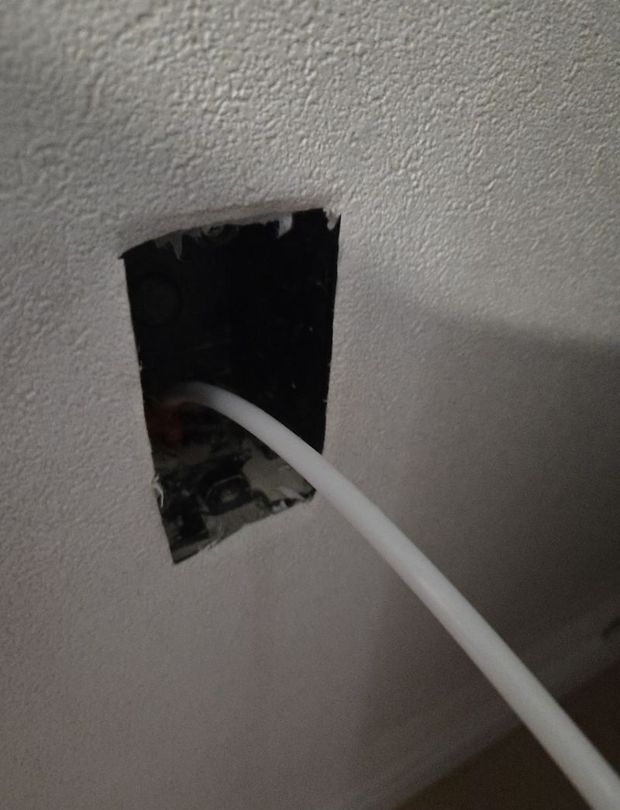
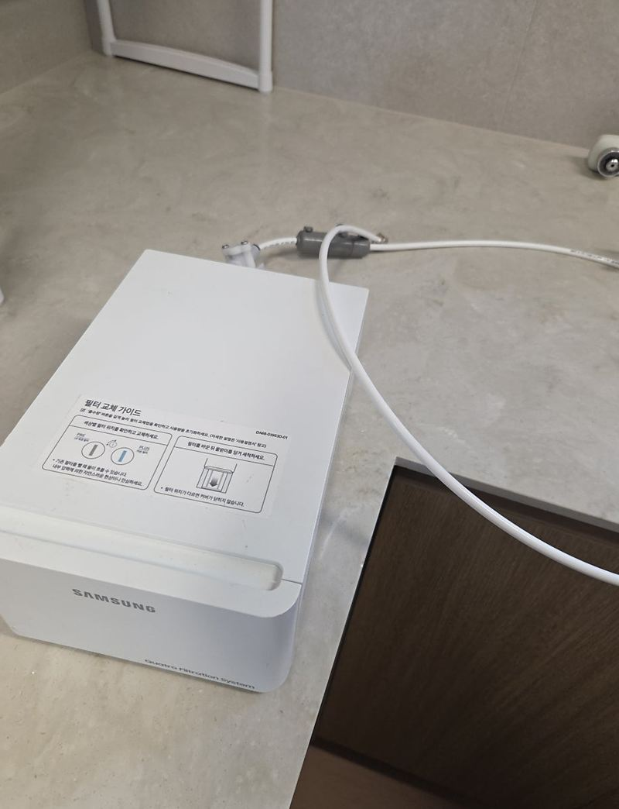
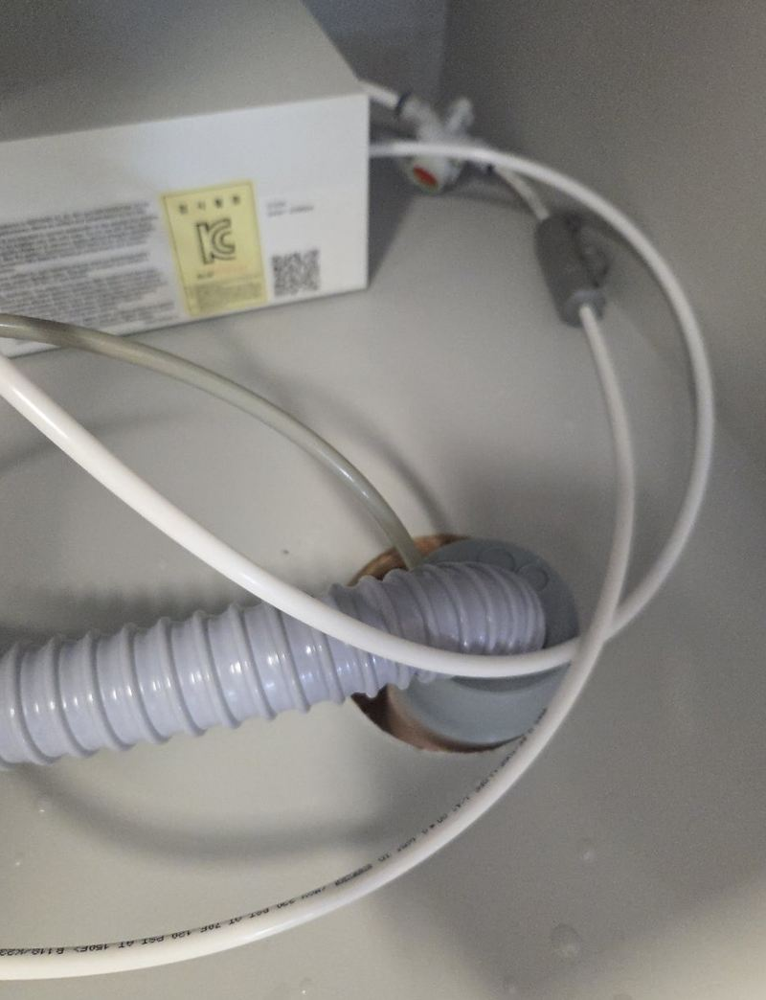
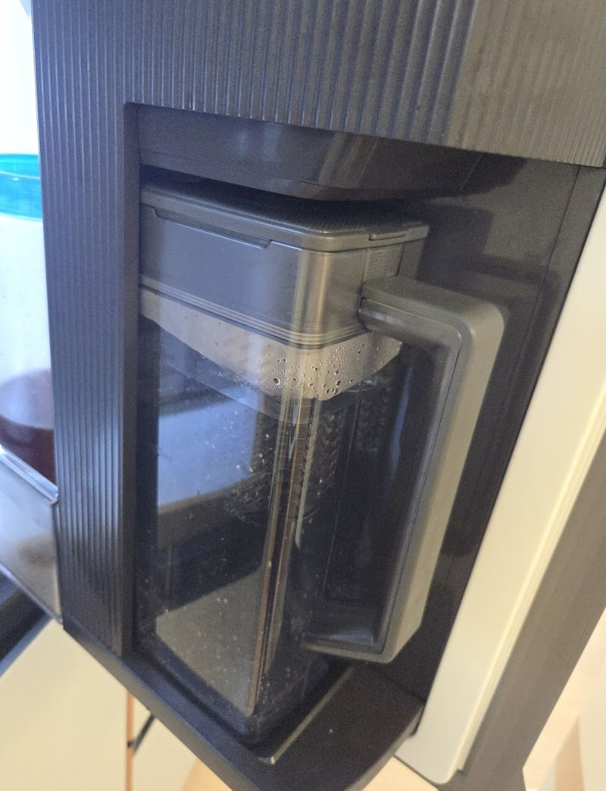

의정부 이사 후 얼음냉장고 급수관 연결 방법
← 밀어서 전후 비교 →
이사 후 냉장고는 제자리에 넣었는데, 얼음만 안 나오는 의정부 아파트였어요. 전원은 들어와 있었지만 급수가 아직 연결되지 않은 상태였어요. 고객분은 "호스가 밖으로 보이지 않게 냉장고 뒤로 깔끔하게 연결해 달라"고 하셨어요. 벽 안쪽으로 급수관이 지나갈 수 있는 구조였지만, 연결 지점을 정확히 못 찾으면 오래 걸리는 자리였어요. 요비선으로 벽 속 라인이 어디로 이어지는지 먼저 찾고, 급수 호스를 체결해 냉장고 뒤로 꺾이지 않게 정리한 뒤 물 공급과 제빙을 확인했어요.
| 현장 | 의정부 아파트 주방, 이사 직후 |
|---|---|
| 증상 | 냉장고 설치 후 급수 미연결로 얼음 기능 사용 못 함 |
| 한 일 | 냉장고 뒤 급수관 위치 확인 → 요비선으로 벽 속 경로 파악 → 급수 호스 체결 → 냉장고 뒤 라인 정리 → 본체 연결부 확인 → 급수·제빙 점검 |
| 요청 | 호스가 겉으로 보이지 않게 |
이사 후 얼음이 안 나오는 이유
얼음 기능이 있는 냉장고는 전원만 꽂는다고 바로 얼음이 나오지 않아요. 물을 공급하는 급수 라인이 이어져야 제빙기가 돌아가요. 이삿짐 업체는 대개 냉장고를 자리에 넣고 전원까지만 연결하고 가서, 급수는 따로 남는 경우가 많아요.
문제는 급수관이 벽 안이나 가구 뒤로 숨어 있어 위치를 찾기 어렵다는 거예요. 억지로 호스를 당기면 벽 속에서 꺾이거나 빠질 수 있어서, 먼저 어디로 이어지는지 확인해야 해요.


벽 속 급수관 찾아 연결하기
경로 찾기
냉장고 뒤 벽면의 구멍에서 요비선을 넣어 라인이 어디로 이어지는지 확인했어요. 보이지 않는 구조에선 이 단계가 가장 중요해요.


호스 체결
경로가 확인되면 급수 호스를 단단히 물리고, 냉장고 뒤에서 무리 없이 자리 잡도록 길이를 맞췄어요.

본체 쪽 확인
냉장고 본체 연결부를 다시 보고, 물이 새는 곳 없이 들어가는지 확인했어요.

연결 후 꼭 보는 것
- 꺾임냉장고를 밀어 넣을 때 호스가 눌리거나 꺾이지 않는지 봐요.
- 연결부 물기몇 시간 뒤에도 연결부가 말라 있는지 확인해요.
- 제빙첫 얼음이 나오기까지 시간이 걸려요. 처음 몇 번은 버리는 게 좋아요.
- 분기 여유나중에 정수기나 로봇청소기 급수를 쓸 계획이면 분기할 여유가 있는지도 봐 둬요.
고객분은 "이사 후 얼음을 못 써 아쉬웠는데, 호스가 안 보이게 정리돼서 주변이 지저분해 보이지 않아 좋다"고 하셨어요.
이사 날 미리 챙겨 두면 좋은 것
이사 업체에 냉장고를 넣을 때 급수 호스를 함께 챙겨 달라고 미리 말해 두세요. 예전 집에서 쓰던 호스와 필터를 버리고 오는 경우가 많아, 새로 구해야 해서 하루 이틀 늦어지기도 해요.
냉장고를 벽에 바짝 붙이기 전에 급수 연결부터 끝내는 게 좋아요. 다 밀어 넣은 뒤에는 뒤쪽에 손이 안 들어가 다시 빼야 하거든요. 새 집 벽에 급수 구멍이 있는지, 싱크대 아래에 분기할 밸브가 있는지도 이사 전에 한 번 보시면 일정이 빨라져요.
얼음냉장고 급수 질문
벽에 급수관이 없으면요?
싱크대 아래 수전에서 분기해 끌어와요. 호스 길이와 지나갈 길을 함께 봐요.
정수 필터를 달아야 하나요?
제품에 따라 다르지만, 필터를 달면 얼음 맛과 냄새가 나아져요.
얼음에서 냄새가 나요.
오래 안 쓴 급수관에 물이 고여 있었을 수 있어요. 처음 얼음 몇 번은 버려 주세요.
물이 냉장고 아래로 새요.
연결부가 덜 조였거나 호스가 꺾여 갈라졌을 수 있어요. 바로 밸브를 잠그고 연락 주세요.
로봇청소기 급수까지 한 번에 할 수 있나요?
밸브에 여유가 있으면 분기해서 같이 이어요. 쓸 기기를 미리 알려주세요.
상담 때 무엇이 필요해요?
냉장고 뒤쪽과 벽면, 싱크대 아래 밸브가 보이게 찍어 주시면 빨라요.
호스를 너무 길게 남기면 안 되나요?
길면 냉장고 뒤에서 뭉쳐 꺾이기 쉬워요. 냉장고를 조금 뺄 수 있을 만큼만 여유를 둬요.
급수 밸브를 잠가 두는 게 좋을 때는요?
오래 집을 비울 땐 잠가 두면 혹시 모를 누수를 막을 수 있어요.
다른 냉장고 주변 현장
냉장고 뒤 벽면과 싱크대 아래 밸브 사진을 보내 주세요.
전화 상담 010-4517-9872